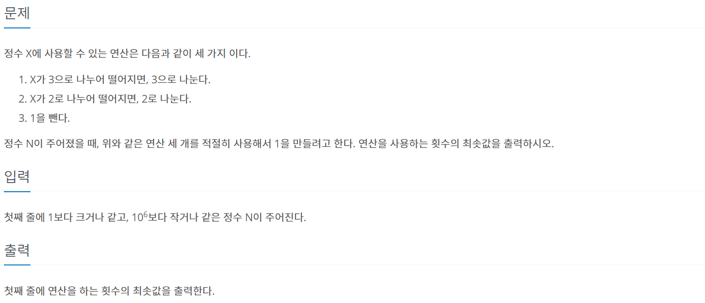
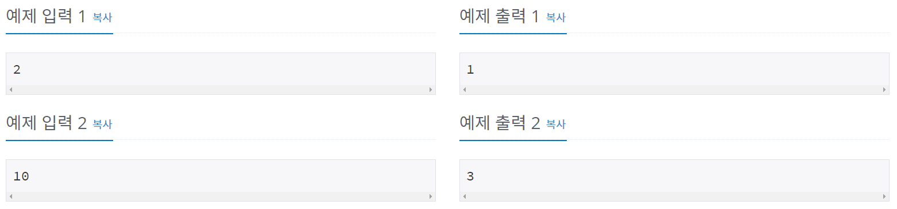
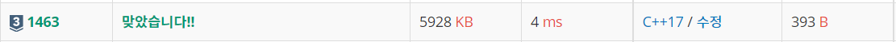

#INFO
난이도 : SILVER3
알고리즘 유형 : 다이나믹 알고리즘 (Dynamic)
∞ 문제 출처 : https://www.acmicpc.net/problem/1463
1463번: 1로 만들기
첫째 줄에 1보다 크거나 같고, 106보다 작거나 같은 정수 N이 주어진다.
www.acmicpc.net
 
#SOLVE
처음엔 단순하게 , 1 -> 2 -> 3 번 방식을 차례로 적용하는 매 상황 마다 최선의 풀이를 적용시키는 그리디적 사고로 접근하면 되지 않을까? 라고 생각했으나 그리디 알고리즘으로는 문제를 해결할 수 없었다.
그 이유는 10과 같은 예외적 상황이 존재하기 때문이다.
10을 그리디 풀이로 적용시키면 10 -> 5 -> 4 -> 2 -> 1 총 4번이 걸리는데, 10 -> 9 -> 3 -> 1 방식으로 1을 만들면 3번밖에 걸리지 않는다.
BOJ 1463 문제는 다이나믹 프로그래밍으로 풀이하면 된다.
dp[n] = n을 1로 만드는 최소의 횟수를 의미하며, dp[1] = 0 으로 미리 초기화 시킨다. 초기 설정을 마쳤다면, 문제에서 제시한 조건을 하나씩 풀이해 보자.
// init
int dp[1000001];
dp[1] = 0;
1. N이 3으로 나누어 떨어지면 3으로 나눈다.
1번 방식을 사용하는 케이스의 최소 횟수는 1 + DP[N/3] 이다. 왜냐하면, N을 N/3으로 만드는 데 걸리는 횟수는 1번, N/3을 1로 만드는 데 걸리는 횟수는 DP[N/3]과 일치하기 때문이다. (앞서, DP[N] = N을 1로 만드는 최소의 횟수라고 설명했다.)
2. N이 2로 나누어 떨어지면 2로 나눈다.
2번 방식을 사용하는 케이스의 최소 횟수는 1 + DP[N/2] 이다. 마찬가지로 N을 N/2로 만드는 데 걸리는 횟수는 1번, N/2를 1로 만드는 데 걸리는 횟수는 DP[N/2]와 일치하기 때문이다.
3. 1을 뺀다.
3번 방식을 사용하는 케이스의 최소 횟수는 1 + DP[N-1] 이다. 왜냐하면 N을 N-1로 만드는 데 걸리는 횟수는 1번, N-1을 1로 만드는 데 걸리는 횟수는 DP[N-1]과 일치하기 때문이다.
1번 ~ 3번 방식을 비교하여 가장 적은 연산을 사용하는 케이스를 DP[N]에 대입 시키면 된다.
// solve
for (int i = 2 ; i <= N ; i++)
{
dp[i] = dp[i - 1] + 1;
if (i%2 == 0 && dp[i] > dp[i/2] + 1)
{
dp[i] = dp[i/2] + 1;
}
if (i%3 == 0 && dp[i] > dp[i/3] + 1)
{
dp[i] = dp[i/3] + 1;
}
}#CODE
#include <iostream>
using namespace std;
int dp[1000001];
int main()
{
int N;
cin >> N;
// init
dp[1] = 0;
// solve
for (int i = 2 ; i <= N ; i++)
{
dp[i] = dp[i - 1] + 1;
if (i%2 == 0 && dp[i] > dp[i/2] + 1)
{
dp[i] = dp[i/2] + 1;
}
if (i%3 == 0 && dp[i] > dp[i/3] + 1)
{
dp[i] = dp[i/3] + 1;
}
}
cout << dp[N] << "\n";
return 0;
}